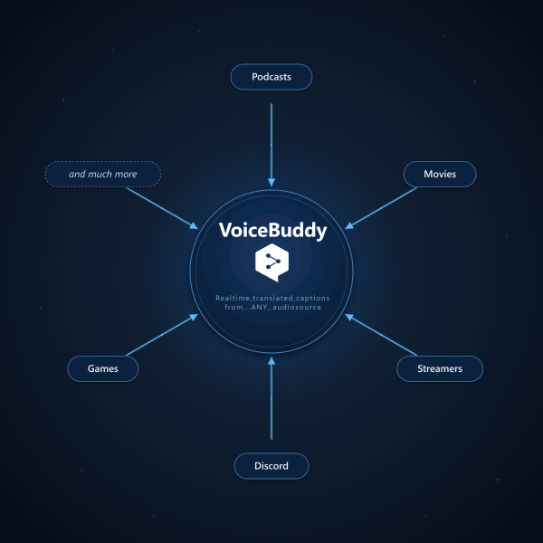
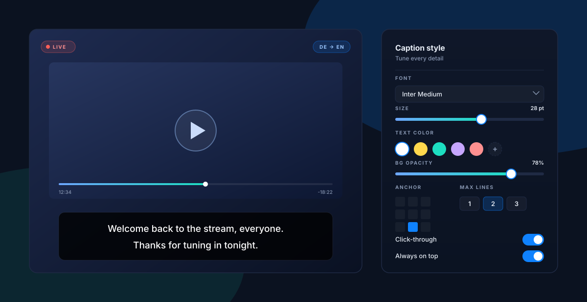
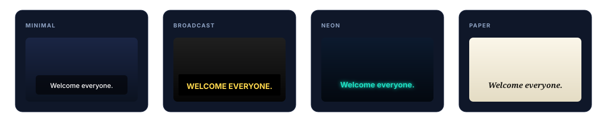
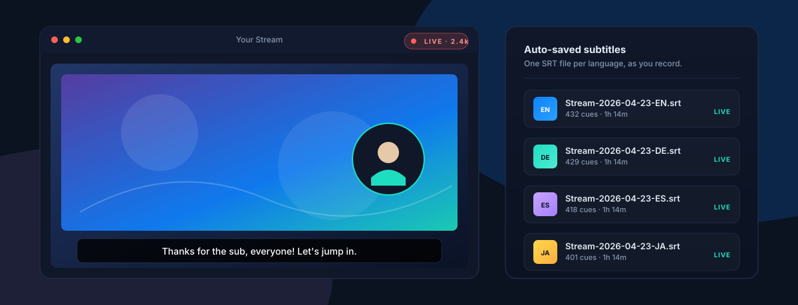

YouTube videos. Twitch streams. Discord calls. Game voice chat. Zoom meetings. That podcast your friend keeps sending you. If your computer can play it, VoiceBuddy catches the audio and puts captions on screen in the language you want, while it happens.
Requires a DeepL Pro API subscription. Sign up at deepl.com

One protocol, three clients, one settings schema. Behaviour stays consistent whether you're on Windows, macOS, or a Chromium tab.
Captions show up on screen the moment someone starts talking. Keep up with fast speakers, subtle comments, and the quiet bits you'd otherwise miss.
YouTube, Twitch, Discord, Zoom, Teams, games, podcasts, browser tabs. If your computer can play it, VoiceBuddy can caption it.
Bring your own DeepL Pro key. Audio is not proxied through any third party. It goes straight to DeepL's servers.
Font, colour, size, background opacity, anchor, max visible lines, click-through. Tune it once and it stays out of the way.
The Chrome extension follows your system theme automatically. Desktop clients let you dial in any palette by hand, with live preview.
Every REST and WebSocket frame is logged in the desktop apps. Troubleshoot a flaky session without guessing.
Pick the one that matches where the audio lives.
Windows 10 (1809+) / 11
macOS 14+ (Sonoma)
Chrome, Edge, Brave, Arc, Opera (2024+)
You'll need a DeepL API Pro key. The Voice API isn't on the Free tier yet.
0install handles auto-updates and shares the .NET 10 Desktop Runtime across apps, so updates stay small.
Download VoiceBuddy-Setup.exe from the latest release and run it. Or if you already have 0install:
0install run https://deejaytc.github.io/VoiceBuddy/voice-buddy.xmlGrab voice-buddy-<version>-win-x64.zip, unzip, run VoiceBuddy.exe. Requires the .NET 10 Desktop Runtime.
Open the Settings tab and paste your DeepL Pro key.
On the Overview tab, choose an audio source from the Device dropdown. Loopback devices (system audio) show a speaker icon; microphones show a mic icon. Click Start capture and play some audio. Captions appear in the overlay.
Download the latest VoiceBuddy.app from the releases page and move it into Applications.
macOS asks for Microphone and Screen Recording. Screen Recording is how ScreenCaptureKit exposes system audio. No video is captured. Approve both in System Settings → Privacy & Security.
Open Settings and paste your key.
On the Overview tab, choose an input device and hit Start capture. Use the menu-bar icon to start, stop, or lock the overlay on the fly.
Clone the VoiceBuddy repo or download the latest release zip.
Open chrome://extensions, enable Developer mode, click Load unpacked, and point it at src/VoiceBuddy.Chrome/.
Click the VoiceBuddy icon in the toolbar, open Settings, and paste your key.
Open a tab with audio (YouTube, Twitch, Meet, Teams web, a podcast, whatever). Open the popup, pick your output language, click Start. Captions show up right on the video.
DeepL API Pro required. The Voice API isn't on the Free tier today. Get a key at deepl.com/pro-api. Your audio is streamed directly to DeepL. Nothing is proxied through a third party.
Every knob you'd expect, plus a few you wouldn't. Tune the overlay once and it stays out of the way. Bold yellow for broadcast, minimal white for focus, neon for streaming, serif on cream for a reading mode.

Drag the overlay to any corner of the screen and lock it there. Turn on click-through and it stops getting in the way of your game, your stream, or whatever you're doing.
Start from a preset, tweak to taste. Your settings JSON copies cleanly across machines.

Settings follow the JSON schema. Find the file at %AppData%\VoiceBuddy\settings.json on Windows or ~/Library/Application Support/VoiceBuddy/settings.json on macOS. Copy it between machines to keep one consistent look everywhere.
VoiceBuddy sits right next to OBS, Streamlabs, or whatever you use. It picks up your mic or your game audio, puts translated captions on screen for your viewers, and quietly saves clean subtitle files while you record. No scripts, no extra tools.

Drop the caption overlay onto your scene. Your audience sees what's being said in their language, while you keep streaming in yours.
Pick a folder, pick your languages, hit record. VoiceBuddy writes one neat .srt file per language, ready to drop into your editor.
Mid-stream crash? No problem. The subtitle file you were writing to is already on disk. Finish the session and it cleans itself up.
Your mic, your game, your guests on Discord, the browser tab with the trailer you're reacting to. Whatever makes sound.
Choose the ones your audience reads in. English, German, Japanese, Spanish, pick a handful and it captions all of them at once.
In OBS, Streamlabs, XSplit, whatever. Window-capture the caption overlay, slide it where you want it, done.
Every session leaves behind clean subtitle files in the folder you picked. Upload them alongside your VOD or drop them straight into your editor.
Limits, settings, and common gotchas.
30-second inactivity timeout. If no audio reaches DeepL for 30 seconds, the server closes the session. The desktop apps surface this as a status message. Just restart capture.
1-hour session cap on the DeepL side. No auto-reconnect yet; restart capture when it hits.
%AppData%\VoiceBuddy\settings.json~/Library/Application Support/VoiceBuddy/settings.jsonchrome.storage.local, per profileDesktop settings share the same JSON schema, so you can copy one across machines. API keys live in plaintext in a user-scoped directory, so don't commit the file. Delete it to reset to defaults.
Binaries are unsigned until the project is code-signed and notarised. First launch will warn on both Windows and macOS. On Windows, click More info → Run anyway; on macOS, right-click the app and choose Open.
No. Extensions only see the active tab. For system-wide audio (desktop apps, games, Zoom clients) use the Windows or macOS app.
VoiceBuddy streams audio directly from your machine to DeepL's servers using your own DeepL Pro key. Nothing is proxied through a third-party relay. DeepL's own terms apply to what happens on their side.
src/VoiceBuddy.App/. Requires .NET 10 SDK. dotnet build / dotnet run --project src/VoiceBuddy.App.src/mac/VoiceBuddy/README.md. Requires Xcode 15+ and xcodegen.src/VoiceBuddy.Chrome/README.md. Load unpacked. No build step, no bundler.